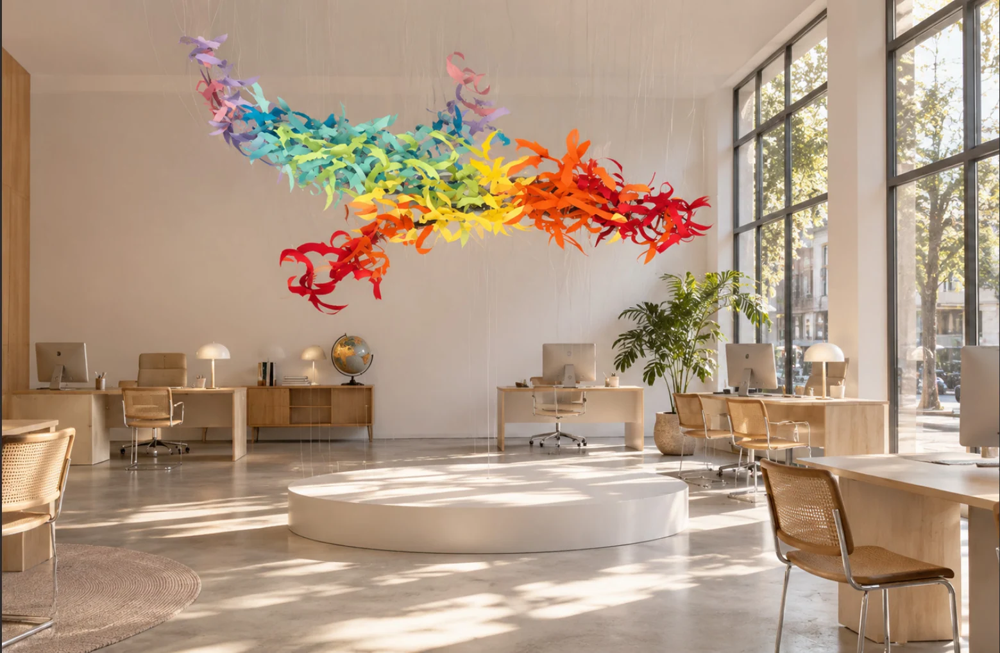
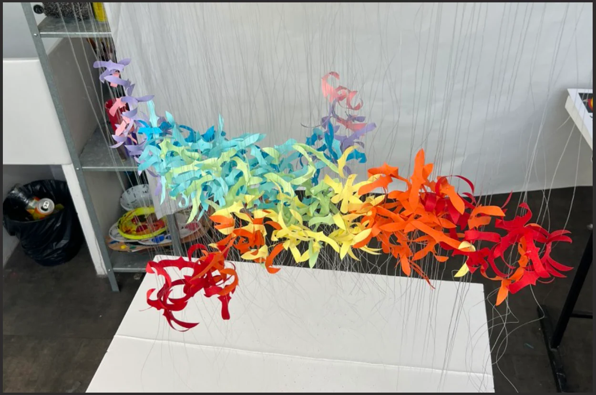
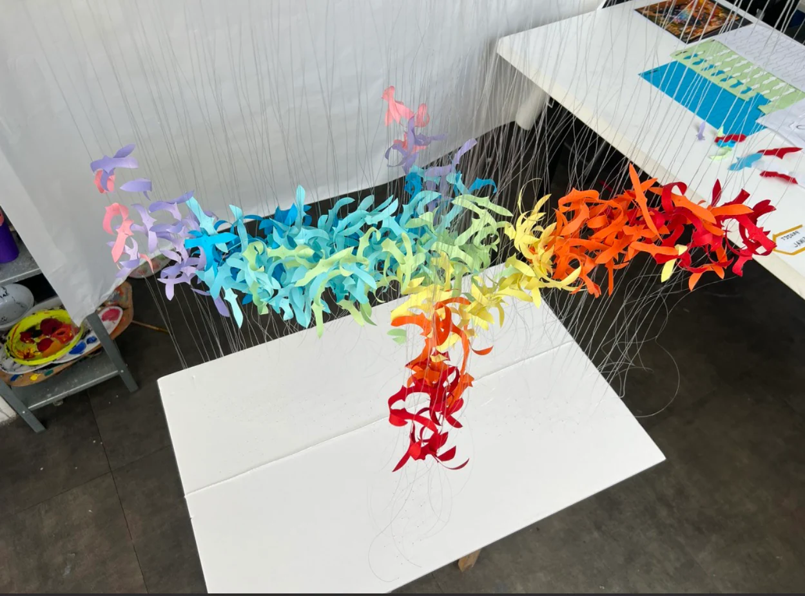

Vol d’émotion
Création d’une pièce centrale pour une agence de voyage.

Lors de ce projet, j’ai dû diriger une équipe de deux élèves moins expérimentés pour développer une maquette pour une vitrine d’agence de voyage. La production a été faite à la main avec du papier et du fil, avant de faire des simulations à l’aide de l’IA.
Il manque les deux ailes arrière, mais la maquette était suffisamment convaincante par rapport à la demande. L’avion fait d’oiseaux de papier colorés représente les émotions et les échanges que l’on vit pendant ces voyages.

